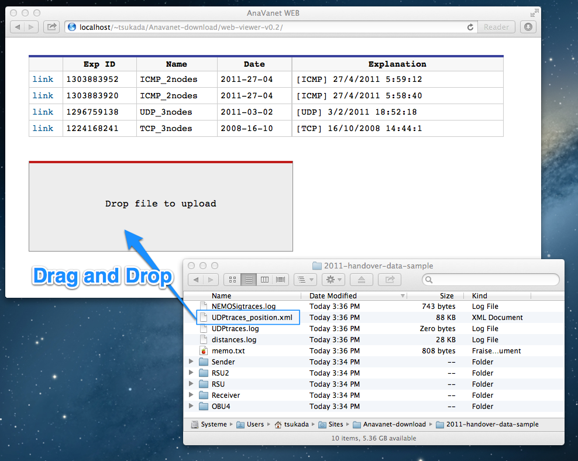

Simple discription about the usage of Anavanet
Last update : $Date: 2014-05-12 21:05:44 +0900 (Mon, 12 May 2014) $
$Author: tsukada $
I'm using following software versions. AnaVANET may be not dependent on specific version of softwares.
The data of the experiments that was taken using GeoNetworking and NEMO in 2011. GPS and TCPDUMP log were recorded in all of OBU4, RSU and RSU2. The UDP iperf log were taken in Receiver side.
AnaVANET/ (recommend to create this directory)
├── 2011-handover-data-sample/
│ ├── memo.txt
│ ├── OBU4/
│ ├── Receiver/
│ ├── RSU/
│ ├── RSU2/
│ └── Sender/
├── packet-processor/
│ ├── build.xml
│ ├── manifest.mf
│ ├── nbproject/
│ └── src/
└── web-viewer-v0.2/
├── index.cgi
├── tool/
├── convert_old_anavanet_xml_and_save_json.pl
│ └── convert_old_anavanet_xml.pl
└── (Others)/
$ java -jar packet-processor/dist/AnaVANET.jar -help
Usage: [-help] [ ...] (-UDP | -TCP | -PING) -C2CNET -GN6 -NEMOSIG
$ sh memo.txt
19:51:37.978 3 MR3(RSU2) RSU2(MR3x) MR3x(MR3) 19:51:48.979 3 MR3(RSU2) RSU2(MR3x) MR3x(MR3) 19:51:59.979 1 MR3(RSU2) 19:52:0.982 1 MR3(RSU2)
19:53:16.941 2 MR3(RSU2) RSU2(RSU2) 19:53:16.945 2 MR3(RSU2) RSU2(RSU2) 19:53:24.23 2 MR3(RSU1) RSU1(RSU1) 19:53:24.23 2 MR3(RSU1) RSU1(RSU1)
<marker date="3/2/2011" time="18:51:34" dateL="3/2/2011" timeL="19:51:13" lat_MR3="48.83783435821533" lng_MR3="2.099832110106945" speed_MR3="0.09260000000000002" lat_RSU1="48.83770191669464" lng_RSU1="2.101257346570492" speed_RSU1="0.0" lat_RSU2="48.83815002441406" lng_RSU2="2.0986740216612816" speed_RSU2="0.0" distance_MR3_RSU1="105.47162577420258" distance_RSU1_RSU2="195.7590989206364" PDRlink_MR3_RSU2="0" PDRlink_RSU2_RSU2="0" PDRlink_MR3_RSU1="0" PDRlink_RSU1_RSU1="0" PDR="0" bytes="0" bandwidth="0.0" jitter="0" rtt="0" NEMO_status="0" />
// Difference between Madrid/Paris time and UTC time, in hours // Summer time =-1, Winter =-2
private static final int DIFF_UTC_TIME = 0;
// When iperf with 1300 Bites, it will be 1442 by adding 142 bits of C2C NET header
// GN6 == 1444 (old) // new == 1432
private static final int IPERF_PACKET_SIZE = 1432;
$ chmod +x index.cgi
$ chmod 777 data/ data/json data/upload
$ which perl /opt/local/bin/perlIn this case, please edit the first line of index.cgi as follow.
#!/opt/local/bin/perl
$ perl index.cgi Can't locate FindBin/Real.pm in @INC (@INC contains: /etc/perl /usr/local/lib/perl/5.14.2 /usr/local/share/perl/5.14.2 /usr/lib/perl5 /usr/share/perl5 /usr/lib/perl/5.14 /usr/share/perl/5.14 /usr/local/lib/site_perl .) at index.cgi line 4. BEGIN failed--compilation aborted at index.cgi line 4.
$ sudo cpan cpan[1]> install FindBin::Real cpan[2]> install Try::Tiny cpan[3]> install JSON::XS cpan[4]> install Text::Xslate
$ perl index.cgi
[Sun Nov 11 16:33:03 2012] index.cgi: Use of uninitialized value $req_method in hash element at index.cgi line 32.
[Sun Nov 11 16:33:03 2012] index.cgi: Use of uninitialized value in subroutine entry at index.cgi line 41.
<h1>Software error:</h1>
<pre>Can't use string ("") as a subroutine ref while "strict refs" in use at index.cgi line 41.
</pre>
<p>
For help, please send mail to this site's webmaster, giving this error message
and the time and date of the error.
</p>
[Sun Nov 11 16:33:03 2012] index.cgi: Can't use string ("") as a subroutine ref while "strict refs" in use at index.cgi line 41.
<Directory "/Users/tsukada/Sites/">
AddHandler cgi-script .cgi
Options Indexes MultiViews ExecCGI
DirectoryIndex index.html index.cgi
#AllowOverride All
#Order allow,deny
Allow from all
</Directory>

If you read until this place, you already download the scripts used in the past experiment, because 2011-handover-data-sample.zip is the complete backup of the experiment took place in 2011. All the scripts and the configuration files are thus in it.
2011-handover-data-sample/
├── OBU4/
│ ├── startOBU.sh
│ ├── itsnet.conf
│ ├── radvd.conf
│ └── mip6d.conf
├── RSU/
│ ├── startRSU.sh
│ ├── radvd.conf
│ └── imara-bt7.txt
├── RSU2/
│ ├── startRSU.sh
│ ├── radvd.conf
│ └── imara-bt20.txt
├── Receiver/
│ └── outdoor-recv.sh
└── Sender/
└── outdoor-sender.sh
Edit the script and configuration and then, launch the scripts (startOBU.sh and startRSU.sh) in both OBU and RSU like follows
OBU4 # ./startOBU.sh RSU1 # ./startRSU.sh RSU2 # ./startRSU.sh
Now the routing setup and AnaVANET setup is ready. Generate the UDP or ICMPv6 traffic by following commands.
In the case of UDP, the commands of receiver side is:
UDP_Receiver # ./outdoor-recv.sh --UDP or UDP_Receiver # iperf -s --format b -i .5 -V >> log.txtThe commands of sender side is:
UDP_Sender # ./outdoor-sender.sh --UDP or UDP_Sender # iperf --client $DST --udp --format b -i .5 -V --time 900 --bandwidth 1000000 --len 1250 >> log.txt
In the case of ICMPv6, only sender side needs a command as follows:
ICMPv6_Sender # ./outdoor-sender.sh --UDP or ICMPv6_Sender # ping6 -i 0.5 $DST >> log.txt
The TCPDUMP log taken in the experiments are converted to text file with the following commends.
$ tcpdump -r (dump_file) -xx -nn -s1500 > tcpdump.txt
The GPS log taken in the experiments are renamed. For example,
$ cp gps_MR_20110203-19-50-768999717.log gps.txt
The data of the experiments that was taken between fixed an access router and a moving vehicle in 2012. The sender access router sent UDP packet using Iperf and the receiver vehicle recorded the log of GPS and TCPDUMP. (14.5 MB)
AnaVANET/ (recommend to create this directory)
├── 2012-09-18-RSSI-test/
│ ├── gps.txt
│ └── moni.pcap
└── sync_geo_rssi/
├── lib/
├── nmea.pl
├── readme.txt
├── rssi.pl
├── sync_gps_rssi.pl
└── t/
$ ./sync_gps_rssi.pl > ../web-viewer-v0.2/data/rssi/20120918150814_sync_rssi_gps.json
under constraction